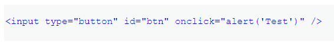
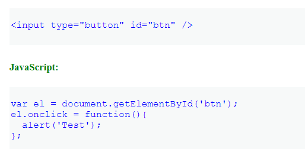
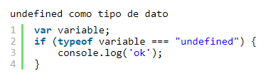
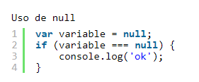
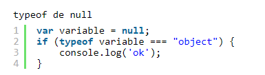

Unobtrusive JavaScript
El Unobtrusive JavaScript es una metodología de mejores prácticas para adjuntar JavaScript al front-end de un
sitio web. Es un ideal para luchar y algo que debemos tener en cuenta cuando agreguemos JavaScript a un sitio.
Es la separación del comportamiento del marcado o la estructura. Al igual que los gurús de CSS de la antigüedad
nos enseñaron que debería haber una separación entre el diseño y el marcado, también debería haber una separación
entre el comportamiento y el marcado. Eso es HTML para el contenido y la estructura del documento, CSS para el diseño
y el estilo, y Unobtrusive JavaScript para el comportamiento y la interactividad. Sencillo.
Todo se reduce a esto: su sitio, y su contenido, aún deben estar accesibles cuando JavaScript no está disponible; la única forma
de garantizar esto es mediante el uso de técnicas de JavaScript discretas.

Ejemplo

Ese no es un JavaScript discreto porque el comportamiento y la presentación son mixtos.
El onclick no debería estar allí en html y debería ser parte de javascript en sí, no html.
Con el ejemplo anterior, puede ser discreto como este:

Tipos de datos null y undefined en JavaScript
Cuando trabajamos con datos en Javascript nos encontramos con algunos casos algo complicados de gestionar entre los que están undefined y null.
Con estos datos debemos tener en cuenta su especial comportamiento y naturaleza. Vamos a dar un repaso a estos tipos de datos con la excusa del desarrollo
de una función universal de comparación de cualquier tipo de datos en Javascript que venimos desarrollando en esta serie de artículos.
Undefined
Cuando una variable ha quedado sin definir tiene un valor especial denominado undefined, que se podría
traducir como «sin definir«. Este valor puede resultar un poco desconcertante, ya que además de un tipo de
datos, existe una variable con ese nombre y también es un valor como tal.
En primer lugar undefined es es un tipo de dato y por lo tanto se puede consultar con typeof.

También tenemos que tener en cuenta que undefined no es una palabra reservada de Javascript y por
lo tanto podemos definir una variable con ese nombre. Si lo intentamos en el contexto global nos
encontraremos que esa variable ha sido definida como {writable: false, configurable: false} y no podemos
cambiarla, pero sí podemos hacerlo dentro del alcance de una función, aunque sin duda es una muy mala idea:

Null
El caso del valor nulo es también bastante singular. En este caso null es un literal definido
en la especificación del lenguaje, no una variable global como en el caso undefined, por lo tanto,
es una palabra reservada y no podremos utilizarla como nombre de variable.
Podemos directamente utilizar el literal null para comprobar este valor es el que contiene una
determinada variable o es el retorno de una función.

A diferencia de undefined, null no dispone de un tipo específico y en el caso de preguntar con typeof
sobre un elemento con valor null nos dirá que es un objeto, lo cual puede desconcertarnos, ya que en la
práctica no podemos tratarlo como al resto de objetos.

Que null es un objeto es algo peculiar y debemos tener en considerar que una variable que dice ser un objeto
realmente puede contener null y producir un error en nuestro código si lo lo validamos.